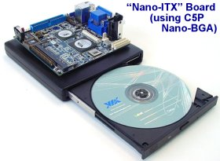
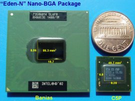

|
|
| CEO Interview: Glenn Henry, founder of VIA processor subsidiary Centaur |
(Jun. 9, 2004)
LinuxDevices.com is proud to present this interview with Glenn Henry, founder of VIA processor subsidiary Centaur Technology, and former Dell CTO and IBM Fellow. Henry discusses the founding of Centaur, its strategy and products, and why Linux is fundamental to his company's success.
(Click for larger photo of Glenn Henry)
Our editor-in-chief, Rick Lehrbaum, met Mr. Henry at the recent Embedded Processor Forum in San Jose, Calif., where he agreed to an interview. This is the ninth in LinuxDevices.com's ongoing series of interviews with executives influential in the embedded Linux market.
Enjoy! . . .
Q1: Can you give us a short history of Centaur?
A1: The idea came to me and my co-founders in 1993. We were working at Dell -- I was Senior Vice President in charge of products. At that time, we were paying Intel I think $160 per processor. That was the lowest Intel price, and that was a special deal. So, it occurred to me that you could make a compatible part and sell it a lot lower. And that part, if not equally fast, would be fast enough for the masses of people.
No one seemed interested in doing that. AMD was just starting in the x86 business at the time, and they were trying to compete head-on with Intel. So, in early 1994, I quit Dell, and three other people came with me. We spent a year working out of our homes trying to get funding to start a company to build low-cost, low-power, x86 chips that were differentiated from Intel but fully compatible with all the x86 software.
Our theory at that time was sort of a "build it, and they will come" theory. We thought that if we could lower the price of the processor, it would stimulate not only low-cost PCs, but new applications we didn't know about in 1994.
We found funding from an American semiconductor company called IDT, and started Centaur. Centaur has never been an independent company in one sense -- we were previously wholly owned by IDT, and now we're wholly owned by VIA. On the other hand, we're an independent company in the way we operate. We have our own culture, our own payroll, etc.
We started officially on Apr. 1, 1995, the day the check came in the mail, an auspicious date. We shipped our first processor two years later, and then another a year and a half after that, in early-1999.
IDT decided to sell us because they had no presence in x86 or the PC world -- there was no synergism there. So they publicly put us on sale, and VIA bought us in September of 1999. The marriage was perfect, because VIA produces all the other silicon that goes into a PC. They design boards, their sister and cousin companies produce boards, their other cousin company makes all the other little low-cost parts for a PC -- all that was missing, from a hardware point of view, was the processor.
In fact, since you're LinuxDevices, I'll make a comment. When I was going around selling this argument, I would point out that the price of everything in a PC but two things was going down drastically, and therefore there's this huge opportunity to move "PC processing" into new dimensions. But the two things that weren't going down were reducing the opportunity. And those two things were the Intel processor, and the Microsoft software.
When we started, we had no answer for what to do about the Microsoft software. We just attacked the Intel processor part of it. But in the meantime, along came Linux. Our percentage of Linux -- I suspect, although I don't have the numbers to give you -- is much higher than other peoples' percentage of Linux, just because of the characteristics of our part.
VIA also had that vision of low-cost, low-power system platforms, so it was a good marriage, because we had the secret ingredient that was missing. As long as you have to buy a processor from Intel, you're obviously restricted in how low a price or small a form factor you can have.
Q2: So, currently the relationship to VIA is "wholly owned subsidiary?"
A2: Yes, in one sense. We're very independent, on a day-to-day basis. They don't send people here. My titular boss is WenChi Chen, the head of VIA, but I talk to him once a month by phone, and it's usually on strategic things. Day-to-day, month-to-month, we operate independently. We have our own payroll, own culture, etc. On the other hand, in terms of product strategy for the future, and practical issues like manufacturing and product support, we work very closely with them. In one sense we're an integrated division, and in one sense we're a contract processor design firm.
Q3: How many employees do you have now?
A3: We have roughly 82. That was one of our selling themes when I started this. But, it was a catch-22. To get people even vaguely interested, we had to have a low-cost theme. To have a low-cost theme, you have to have a very lean design cost, too. But on the other hand, when I told people, "Well, there's four of us in our kitchens, and with another 20 or 30 people we could build an x86 processor," no one would believe that.
Q4: Yeah, how is that possible?
A4: It's made possible by two things. One is sort of a product focus. The other is the culture, how we operate. Let me talk about the product focus first.
Intel designs processors -- and so does AMD -- number one, to be the world's fastest, and number two, to cover the whole world. The same basic processor is packaged in the morning as a server processor, and in the afternoon as a mobile processor, etc., etc. Not quite true, but... They sort of cover the world of workstations, servers, high-cost desktops, and mobile units. And AMD tried to do that. But they're also trying to be the world's fastest.
The idea I had, which actually was hard for people to accept could be successful, was, "Let's not try to make the world's fastest. Let's look at all the characteristics. Speed is one, cost is another, power consumption is another, footprint is another. And let's make something that wins on footprint size, cost, and power, and is fast enough to get the job done for 90 percent of the people but is not the fastest thing in the world."
The last 10 percent of performance is a huge cost. And not just the hardware side, but also in design complexity. So, in fairness, our parts are slower than Intel's. On the other hand, our parts are fast enough to get the job done for most people. Other than the marketing disadvantage of having slower parts, our parts perform quite well. And they have much lower power, and a much smaller footprint, and they cost much less. Those characteristics appeal to a number of applications.
So, that's our theme. The marketing guys don't like me to say "fast enough" performance, but you know, we're not as fast, head-to-head, as Intel is. But, we are fast enough to do 90 percent of the applications that are done, using a processor. Maybe even more than that. And we have very low power -- much lower than Intel or AMD -- and a really small footprint size -- much smaller than Intel or AMD.
The small footprint only appeals to some people, but for that class of people, i.e., in the embedded space, that characteristic is important. And, of course, the cost is very, very good. I can't give you actual numbers, but our parts sell in the neighborhood of $30 to $40 for a 1GHz part.
There's a second secret ingredient. I had 28 years of management before I started this. And, I had the luxury of starting a company with a clean sheet of paper, with three other guys who had worked for me for a long time. Our original owner, IDT, sent money and left us alone. So, we have created a culture that I think is the best in the world for doing this.
Our engineers are extremely experienced, and very, very productive. One engineer here does the work of many, many others in a big company. I won't go through all the details, because they're not technical, but basically, we started with the theory, "We're going to do this with 20 or 30 designers." Remember the 82 people I mentioned? Of those, only 35 are actual designers. The rest are testers, and things like that.
So, we said, we were going to do it, with that many people. As I said before, we had this idea to constrain the complexity of the hardware. We hired just the right people, and gave them just the right environment to work in. We bought the best tools, and developed our own tools when the best tools weren't available, etc., etc.
So I have a long story there, but the punchline is that we were able to hire extremely experienced and good people, and keep those people. We just passed our nine year anniversary, and the key people who started the company in the first year are almost all still here.
So, this is the secret, actually: all the things I do are underlying things to allow us to hire the right people and keep them motivated and happy, and not leaving.
Our general claim is, "This is a company designed by me to be the kind of place I wanted to work in as an engineer." It doesn't fit everyone, but it fits certain people, and for those people, it's probably the best environment in the world.
Q5: Bravo! That sounds like a great way to create a company.
A5: We were very lucky. I found two people who personally believed in that. This is a very hard story to sell. You got to go back to 1994, when I was travelling from company to company, and my story was, "Lookit, there's four of us in our kitchens in Austin, I want you to give us $15 million dollars, I want you to leave me alone for two years, and then I'll deliver an x86 processor." Right?
That's a very hard story to sell. We were lucky to find at the time, the CEO of IDT, a person by the name of Len Perham, who, personally believed the story. Since he was the CEO, Len was able to get others to believe in it. With VIA, the person we found that believed that was WenChi Chen, who's the CEO of VIA. Those people were both visionaries in their own right, and understood the importance of having an x86 processor.
My basic argument for why a person would want to do this was simple. It's clear that the processor is the black hole, and that all silicon is going to fall into it at some point. Integration is inevitable, in our business. Those who can do a processor can control their system destiny, and those who don't will end up totally at the mercy of other people, who can shut them out of business right away.
And as an example, when IDT bought us, they were making a lot of money on SRAMs that went into caches on PC motherboards. Two years later, there were no SRAMs on PC motherboards, because Intel put them on the die. That's going to happen to some of the chips today. All the other chips are gonna disappear at some point, and all that's left is the big chip, with the processor in the middle. You have to own that processor technology, or it won't be your chip.
So that's my basic sell job. It reached two people, but they were the right people.
Q6: Can you give a real quick summary of the history of the processors?
A6: Our first processor we shipped was called the WinChip C6. "WinChip" was a branding name that IDT had. It was 200MHz, but it had MMX. It was a Pentium with MMX. We shipped two or three more straightforward derivatives of that, added 3DNow, put an on-chip cache on it, then further enhanced the speed, and that's where we were when VIA bought us.
With VIA, we've shipped several major designs.
The first one we call internally C5A. There are three different names... it's very confusing. When I talk to people, I usually end up using our internal names. I used those in my talk at the Microprocessor Forum. VIA also uses another codename for a class of products that covers several of our products, names like Samuel, Nehemiah -- they're Bible names. And then there's the way the product is sold.
The first part we sold for VIA had a Pentium III bus on it, and was around 600MHz. Since VIA bought us, four and a half years ago, we have shipped four different variations. Each one is faster; each one has more functions, is more capable; each one is relatively lower power. The top Megahertz goes up, but the watts per Megahertz always goes down. They're all the same cost.
The product we're shipping now, the C5P has a top speed of 1.4 to 1.5GHz, today, but the sweet spot is 1GHz. We have a fanless version at 1GHz. We also sell all the way down to 533 or even 400MHz, for low-power applications.
To give you an idea about the 1GHz version we're selling today, the worst case power -- not "typical" or "average" power, which other people talk about -- our worst case power is 7 watts, which is low enough to do fanless at 1GHz [story], and no one else can do that.
Second, we also sell that same part at 533. It's worst case power is 2.5 watts. So, remember, I'm talking worst-case power. Typical power, which a lot of people quote, is about half of the worst-case power. So, if we want to play games, we could say it's a 1 to 1.5 watt part at 533MHz, and it's a 3-watt part at 1GHz.
Along the the way, we've used four different technologies. All our technologies since we were bought by VIA have been with TSMC [Taiwan Semiconductor Manufacturing Company]. We've used four major technologies, with, obviously, sub-technologies. So we've shipped four major designs, with two or three minor variations, but they weren't radically different. That's in four years.
We design products very quickly. That was also part of my theme: be lower cost than everybody else, and be able to move faster than everybody else. The things that make you able to do things with a small group also allow you to do things quickly. Actually, the more people you have, the slower things go: more communication, more decision-making, etc.
By the way, I stole this idea from Michael Dell. Quick anecdote: I was an IBM Fellow, and I managed very large groups -- hundreds of people -- at IBM. And I went to Dell originally to be their first Vice President of R&D. This was in 1988. So, I get to Dell, and find that the R&D department is six or seven guys that work directly for Michael! And Michael says, "Your job is to compete with Compaq." And I say, "Well, how can you do that with six or seven guys?" And he says, "That's the secret. We'll always be lower-cost, and we'll move quicker than they are." And of course, that's worked out very well at Dell.
We put out a lot of products, in a short period of time, which is actually a major competitive advantage. To give you one minor example, early this year, Intel started shipping a new processor called the Prescott. It's a variation of the Pentium 4. And it had new instructions in it, basically, that are called SSE3. We got our first part in late January. Those instructions are already in the next processor, that we've taped out to IBM.
Q7: That's the C5J?
A7: Yes. That's what I talked about [at the recent Embedded Processor Forum] out in California. I said there's four major processor types that we've shipped in four and a half years, but I take it back. There's five. The C5A, C5B, C5C, C5XL, and C5P. Five major designs that we've shipped in four and a half years. And the sixth is the C5J. It's headed for IBM.
Q8: Is TSMC still your normal fab?
A8:The old designs will still sell for quite a while. The new design is going to IBM. So we'll have both. We'll be shipping partial IBM and partial TSMC for quite a while. And we may go back again to TSMC in the future. This is normal business. We haven't burned any bridges. At least, we don't think we have. VIA does a tremendous amount of business with TSMC, and has a very close relation.
As technology advances, no one remains the best in the world across all technology versions. Typically, in 0.13 [micron process], this person's better than this person. Then you go to 0.09, and it may be different.
Q9: In terms of competition between embedded x86 processors, with AMD and Intel, where does VIA stand? For example, in comparison with the AMD NX line?
A9: All I know is what's in the specs. [AMD's NX] looks suspiciously like a 32-bit Athlon...
Q10: They did tell us it was a tweaked Athlon. [story]
A10: Right. And their power is reduced over their normal Athlon numbers, but it is still higher than ours. Let's be fair about it. If you wanted to build the fastest thing in the world, you'd choose the AMD part, or the Intel Pentium 4. However, we beat them on power -- both of them -- we beat them on cost, and we beat them on footprint [comparison chart at right, click to enlarge]. So, if what you want to build is a set-top box, or what you want to build is sort of a classic PC, or what you want to build is a thin client terminal, or what you want to build is a Webpad, our processor's performance is adequate and we win easily on cost, power, and footprint.
Q11: How do you position yourself relative to the GX, the old Geode stuff?
A11: Well, we blow it away in performance. I mean, it's a 400MHz part. It is a two-chip solution, and we are a three-chip solution today. I don't really know its specs, but power is probably close when you get down to the same Megahertz. It stops at 400MHz, while we start at 400MHz and go up to 1.5GHz. From 400 on up, we're faster, and our power is good. If 100MHz would do you, or 200MHz -- whatever their low point is, which I don't know exactly -- if that's good enough for you, then they will have lower power, because we don't go below 400MHz.
We think they're squeezed into a really narrow niche in the world, because their performance is so low. Anything from 400MHz on up, in the power that goes with that, we win.
So here's how we look at the world:
From 400MHz to 1GHz, there's nothing but us, that's competitive.
From 1GHz to 1.5GHz, we'll compete with the low-end of Intel and AMD.
From 1.5GHz on up today, if that's the speed you want, then you choose AMD or Intel.
My opinion is down at 400MHz and below, the GX has a very narrow slice. They're competing with things that have even better power than they do and good prices, the classical non-x86 embedded processors based on ARM and MIPS. And right on top of them, there's us. We have better performance and equal power at our low end, which is their high end. And, we stretch on up until we run into the bottom end of AMD and Intel.
We think that our area, the 500MHz to 1.5GHz range, represents a potentially massive opportunity. What we're seeing is interesting. About 50 percent of our sales are going into non-PCs. We're not taking sales away from other people, as much as we are enabling new applications -- things that have historically not been done at all, because it either was too expensive, or the power was too high, or the software cost was too great.
You know the VIA mini-ITX boards? [story] That is one of the smartest moves.
All of our engineers like to play. You know, there are robots roaming around here; people have built things like that? One guy built a rocket controller last week -- you know, normal engineering work. What our engineers do is what I tell people to do: buy a mini-ITX board, and add your value-add with frames, cover, and software.
It really is a major improvement over the classic thing where you had to do your own hardware. That board is so cheap: $70 to $150 down at Fry's, depending upon the variation. And it has all the I/O in the world. You can get 18 different versions of it, etc., you know the story. You can customize it using software, and you have a wide variety of operating systems to choose from, ranging from the world's most powerful, most expensive, to things that are free and very good.
Q12: What about nano-ITX [story] and even smaller opportunities, like PC/104 and System-on-Modules. There are standards from SBC companies like Kontron and 20 other companies. You ought to have a DevCon, like ARM and Intel do, to enable all these guys. Do you do anything special to enable them?
A12: I'm not sure of all that is done. VIA does make sample designs, board schematics, etc., available, and works with many customers on their unique solutions. And, of course, the mini-ITX does stimulate lots of designs.
We have other customers, that are doing their own unique designs, and some of them we work with to make things small. Right now, we are a three-chip solution. We're working on reducing that to a two-chip solution. By three-chip solution, I mean processor, northbridge, and southbridge to make a complete system. That'll be reduced to a two-chip solution, at some point, which reduces the footprint even more.
We've made a major improvement with the new package. You've seen that little teeny package we're shipping today, that we call the nano-BGA? [story] It's the size of a penny-type-thing. That's a real breakthrough on processor size. We need to get the other two chips boiled down to go much further.
People are doing other designs. For example, one of the things VIA's touting -- I don't know much about the details of it -- there's a group that's doing this handheld x86 gaming platform? [story] It sits in your hand like a Gameboy, but it's got a full x86 platform under it. And the theory is, you can run PC games on it. It has a custom motherboard in it, using our processor.
Q13: When you mentioned reducing from three chips to two chips, that reminded me of Transmeta. What would you say about Transmeta as an x86 competitor?
A13: Well, Transmeta has good power. They're really not any better than us, but we're better than the other guys. So I'd say, yeah, equal in power. They have okay footprint. They have two chips, but their two chips are big. I had a chart in the fall Microprocessor Forum showing that our three chips were the same size as their two chips. So there's not a big difference in footprint size. Biggest difference is threefold.
One, is that they're very costly. In their last quarterly earnings conference call, they quoted orally an ASP [average selling price] of I think it was $70, which is ridiculously high. You notice they're losing mass amounts of money -- $20 million a quarter -- so they need to try and keep prices high.
Two, is the fact that our performance on real-world applications is much better than Transmeta's. They do well at simple repetitive loops, because their architecture is designed to do well there. But, for real applications with big working sets, rambling threads of control, etc., we beat them badly. For example, in office applications such as Word, Excel, etc. -- the bread and butter of what the real world does."
But the other argument is sort of subtle, and people miss it. Their platform is very restricted. Their two-chip solution only talks to two graphics chips that exist, in the world, right? And you have to choose. And if you don't like the memory controller they have, let's say you want X, etc. -- they only support certain memories. etc., etc.
We have a processor that talks to 15 different northbridges, each of which talk to 17 different southbridges. You want four network things? Fine, you got four network things. You want an integrated graphics panel, AGP... fine. You can configure all of those things using the normal parts. And, what we've found in the embedded world is that one size definitely does not fit all. That's why VIA itself has done eight variations of the mini-ITX board, and keeps doing more, and other vendors have made lots of other variations. Some have four serial ports, some have one; some have four networks, some have none, and so forth and so on. The flexibility offered by these standard parts in the PC world is, I think, a significant advantage.
Q14: You are chipset compatible with Intel parts?
A14: Oh, yes. We do most of our testing with Intel parts, just to make sure. We can drop into Pentium III motherboards, and do it all the time. In the embedded world, we sell primarily with VIA parts. They usually sell our processor either with a bag of parts, or built into the VIA mini-ITX motherboards, and now the nano-ITX [pictured at right, click to enlarge]. The other half of our business is in the world of low-cost PCs. There, it's whatever the board designer or OEM chose to use.
That's always been part of our secret. Basically, my selling strategy for that part of the world [using low-end PCs] is, hey, "Take your design, take your screwdriver, pry up that Pentium III, plug us in, and you'll save XX dollars." That isn't a a very appealing thing in the United States. But if you go to the rest of the world, where people don't have as many dollars as we do, and where there isn't as much PC penetration, that's a reasonably appealing story. We've actually sold millions of parts, with that strategy.
Q15: Can you explain your packaging variations?
A15: The same die goes into multiple packages, and goes into different versions of the product. The C3, that's a desktop part that has the highest power of our parts. Antaur, that's the mobile version. It has fancy, very sophisticated dynamic power management enabled. Eden is the embedded part. All Edens are fanless. They run low enough power to be fanless, at whatever speed they are. So, one of our dies ends up in three branding bins: the C3, the Antaur, or the Eden. When you buy an Eden, 1GHz, there are sub-variations that may not be obvious that actually distinguish whether it was a C5P or a C5XL. But both are branded as Eden 1GHz. So that's the branding strategy.
Cutting across that, there are three packages. One, is the ceramic pin grid array, which is compatible with Pentium III. The PC market usually has a socketed processor, so we have a package that's compatible with that. We also have a cheaper ball grid array version of that, which is a little smaller, and it's cheaper because it's not socketed. And then we have the nanoBGA, which is that little teeny 15 by 15 mm thing; and that's an expensive package, so we charge a little bit more for that. But for people where space is a concern, that's appropriate. That small size is only offered in Eden, because that small size is only appealing to embedded guys. The standard PC market in general doesn't care about small size. When they design a motherboard, they generally design it big enough to handle anybody's processors -- AMD's, Intel's, or ours. We fit easily into that world.
Q16. Our reader surveys [story] show ARM overtaking x86 in new embedded project starts -- though we can't identify the MHz range of those projects. Can you comment on the competition from the higher ends of XScale and ARM and MIPS?
A16: I think there's a class of applications where an x86 is clearly going to win, a class where it's clearly going to lose, and that always leaves a middle.
One where it's going to lose is where your power budget, or your size budget, are really, really small. For example, the PDA, which has got an ARM in it. An x86 processor, even ours or Transmeta's, just consumes too much power. There isn't a size problem, probably, with our design -- there would be with Intel or AMD, where the chips just won't fit in that package [see size comparison photo at right; click to enlarge]. That type of application, you're going to choose an ARM, or a MIPS.
Where I think x86 wins easily, in my experience, is where, number one, the battery size versus runtime expectation is hours -- right? -- not days, not weeks. Or, there's a power supply. Set-top boxes, for example. They all want fanless parts, so they want really low power, but they have a power supply. They're not running on batteries, obviously.
The other characteristic that I think really shows the advantage of x86, is where an application has a user interface of any sophistication, or where the application is doing something particularly sophisticated. Obviously, you can run Windows CE, and even Linux, on something the size of a PDA. But those things are very limited. I have a 400MHz Toshiba PDA, the 800, the latest one out. The 400MHz ARM is the fastest you can buy. I installed an aviation application on it last week, and it runs really slow. I wish I had 800MHz, or 1GHz.
If you want very low power, there's really no choice. If you're not worried too much about the power, then there's two factors. One is how fast you need to run, and the other is the complexity of the software you need to run. Speed and software complexity favor x86.
We're not going to take over the printer world, or the carburetor control world. What we are doing is pushing the size and power envelope down every year, so x86 is able to reach smaller sizes and lower power every year but still maintain the high ground.
I made a joke when I attended the Embedded Processor Forum... I always talk at the fall Forum, you know, the Microprocessor Forum? And there, I'm always the slowest thing. I'm put in the group with 3GHz this, etc. But at this Embedded Forum, we were far and away at 1GHz the fastest thing there, bar none.
There is definitely a major performance gap. We may be slower than a Pentium 4, for example, but we're still a lot faster than the MIPS and ARM chips.
Q17. Except a Geode might have the distinction of being speed-competitive with the ARM chips?
A17: I'll bet you a 400MHz ARM is a lot faster than a 400MHz Geode. There's an age-old penalty of x86. Plus, Geode's a three-year old design. AMD hasn't changed it a bit. It doesn't have SSE, it's still using 3DNow, etc., etc. It doesn't have a number of other modern instructions that you'd like it to have. The ARM 400s are going to have lower power and faster performance. I don't actually know the price in those markets, so I can't comment on that.
Q18: We'd like to get you to talk a little bit more about Linux and the importance of Linux in terms of Centaur's success, and how the fit is.
A18: I think there are three things. First of all, our theme all along is to be able to produce the lowest-cost PC platform that there is. When I was going around selling this, I was talking about the sub-$1,000 PC, which is now a joke. There are PCs being sold with us in it that are sub-$200. So, let's look at a $200 PC, and right next to it is a $100 off-the-shelf version of Windows XP. The presence of a low-cost operating system is substantially more important at the low end of the low-price hardware market, which is our focus. I think it's a very big deal that we have a low-cost operating system to go with a sub-$200 PC.
The second thing is the embedded space. In embedded -- I'm using that as a very broad term -- one of the characteristics is customization. People are building applications that do a particular thing well, be it a set-top box, or a rocket controller, or whatever it may be. Customization for hardware is probably easier to do on Linux than it is on Windows. If it's an application that needs to have close control of hardware, needs to run very fast, needs to be lean, etc., than a lot of people are going to want to do it on Linux.
The third one, is one you haven't asked me about, this is actually my pet hobby, here -- we've added these fully sophisticated and very powerful security instructions into the...
Q19: That was my last question!
A19: So the classic question is, hey, you built some hardware, who's going to use it? Well, the answer is, six months after we first started shipping our product with encryption in it [story], we have three or four operating systems, including Linux, OpenBSD, and FreeBSD, directly supporting our security features in the kernel.
Getting support that quickly can't happen in the Microsoft world. Maybe they'll support it someday, maybe they won't. Quite honestly, if you want to build it, and hope that someone will come, you've got to count on something like the free software world. Free software makes it very easy for people to add functionality. You've got extremely talented, motivated people in the free software world who, if they think it's right to do it, will do it. That was my strategy with security.
We didn't have to justify it, because it's my hobby, so we did it. But, it would have been hard to justify these new hardware things without a software plan. My theory was simple: if we do it, and we do it right, it will appeal to the really knowledgeable security guys, most of whom live in the free software world. And those guys, if they like it, and see it's right, then they will support it. And they have the wherewithal to support it, because of the way open software works.
So those are my three themes, ignoring the fourth one, that's obvious: that without competition, Windows would cost even more. To summarize, for our business, [Linux is] important because it allows us to build lower-cost PC platforms, it allows people to build new, more sophisticated embedded applications easier, and it allows us, without any software costs, to add new features that we think are important to the world.
Our next processor -- I haven't ever told anyone, so I won't say what it is -- but our next processor has even more things in it that I think will be just as quickly adopted by the open source software world, and provide even more value.
It's always bothered me that hardware can do so many things relatively easily and fast that aren't done today because there's no software to support it. We just decided to try to break the mold. We were going to do hardware that, literally, had no software support at the start. And now the software is there, in several variations, and people are starting to use it. I actually think that's only going to happen in the open source world.
Q20: We'd like a few words from you about your security strategy, how you've been putting security in the chips, and so on.
A20: Securing one's information and data is sort of fundamental to the human need -- it's certainly fundamental to business needs. With the current world, in which everyone's attached to the Internet -- with most peoples' machines having back-door holes in them, whether they know it or not -- and with all the wireless stuff going on, people's data, whether they know it or not, is relatively insecure.
The people who know that are using secure operating systems, and they're encrypting their data. Encrypting of data's been around for a long time. We believe, though, that this should be a pervasive thing that should appear on all platforms, and should be built into all things.
It turns out, though, that security features are all computationally intensive. That's what they do. They take the bits and grind them up using computations, in a way that makes it hard to un-grind them.
So, we said, they're a perfect candidate for hardware. They're well-defined, they're not very big, they run much faster in hardware than in software -- 10 to 30 times, in the examples we use. And, they are so fundamental, that we should add the basic primitives to our processor.
How did we know what to add? We added government standards. The U.S. government has done extensive work on standardizing the encryption protocols, secure digital signature protocols, secure hash protocols. We used the most modern of government standards, built the basic functions into our chip, and did it in such a way that made it very easy for software to use.
Every time you send an email, every time you send a file to someone, that data should be encrypted. It's going out on the Internet, where anyone with half a brain can steal it.
Second, if you really care about not letting people have access to certain data that's on your hard drive, it ought to be encrypted, because half the PCs these days have some, I don't know what the right word is, some "spy" built into it, through a virus or worm, that can steal data and pass it back. You'll never get that prevented through operating system upgrades.
I do have some background, sort of, in security: it's always been my hobby. The fundamental assumption you should make is, assume that someone else can look at what you're looking at. In other words, don't try to protect your data by assuming that no one's going to come steal your hard drive, or no one can snoop through a backdoor in Windows. You protect your data by saying, "Even if they can see the data, what good is it going to do them?"
We think this is going to be a pervasive need. The common if-you-will person's awareness of worms and viruses has gone up a million percent in the last few years, based on all the problems. The awareness of the need to protect data is going to go up substantially, too.
We're doing more than encryption, though. There's another need, which is coming, related to message authentication and digital signatures.
We're encrypting all the time. Every time you buy something over the Web, your order is encrypted. So there is encryption going on already. But the next major thing -- and this is already done in the high-security circles of banks -- is message authentication through digital signatures. How do you know someone didn't intercept that order, and they're sending in their own orders using your credit card number? How do you know, when you get a message from somebody, that they didn't substitute the word "yes" for "no," things like that? These are very important in the world of security. They're well understood in the government world, or the high-security world, and there are government standards on how you do these things. They are called secure hashes, and things like that. So we've added features for those.
To summarize, the things we've added fall into three categories. One is a good hardware random number generator. That was actually the first thing, and that's actually one of the hardest things to do. It sounds trivial, but it's actually very hard to generate randomness, with any kind of process. It needs to be done in hardware. Software cannot generate random numbers that pass the tests that the government and others define.
The second thing we did is a significant speedup in the two basic forms of encryption. One's called symmetric key encryption, and the government standard is AES, which is a follow-on to a thing called DES. So we do AES encryption very fast. The other form of encryption that's widely used is public key encryption, and the most common form there is a thing called RSA. That's what's being used, you know, for secure Web transactions. We think we're the only people who've done this: we added instructions in our new processor that's coming to speed up RSA.
The third thing we've done is added what's called a secure hash algorithm. Again, it's a government standard. Its used for message authentication and digital signatures. It deals with the issue, if you send me an email, how do I know that the email I got was the one you sent? That it wasn't intercepted and changed? And more fundamentally, how do I know that it actually came from you? Anyone can put their name, in our world, on that email. Things like that. So there's got to be some code in that email that I can look at, and know that only you could have sent it. I can explain this more if you want to know.
Q21: That's probably sufficient. We're looking more for the strategy.
A21: Okay, let me back up. Our strategy was, assuming that we believe that security is fundamental and ought to be there, to define the primitive operations that need to be done as the building blocks of security. Those we put into hardware. We're not trying to impose a particular, I don't know, protocol or use. We're just making available the tools. We're doing it for free. The tools are in the processors, at no extra price. They don't require any OS support, no kernel support, no device drivers. It's getting into the kernels of BSD and Linux, but applications can directly use the features [even without kernel support], and the hardware takes care of the multitasking aspects.
The two guys who worked on it with me are both heavy Linux users. They wrote to friends in the security and Linux communities. Very little marketing money was spent.
When the security press release went out, at the Embedded Processor Forum, it had three key quotes, real quotes. Not quotes written by PR managers. My quote was written by a PR manager, but the others weren't. All three were big names in the security world, and all were saying good stuff.
Q22: Beyond security, are other cool features planned?
A22: The next chip has some tools to do computationally intensive things where hardware provides a big advantage. But I don't want to say yet what they are.
Q23: Would they be useful for multimedia?
Yes, for multimedia, and for other things.
Q24: Like a DSP?
A24: Kind of like that.
Q25: Okay, we won't push. We appreciate you taking the time to speak with us. We can't imagine getting the president of AMD or Intel to do this.
A25: Our whole strategy is so close to the, if you will, the fate of Linux. We identify so much with it. We're low-cost, aimed at the common person, we're aimed at new applications, and we don't have any massive PR or marketing or sales budget, so. Actually, I have a special softness in my heart for Linux. I think without Linux our business would be much less than what it is today. It's just very important to us, so, I wanted to give you guys the time.
About the Interviewee
Glenn Henry is the founder and president of Centaur Technology. Throughout his career, he has played an integral role in the development of the U.S. computer industry.
Prior to founding Centaur in April 1995, Henry served as a consultant to MIPS Technology (SGI) for one year. From 1988 to 1994 he was Chief Technology Officer and Senior Vice President of the Product Group at Dell Computer Corporation. As Senior VP, he was responsible for all product development activities and, at various times, also responsible for product marketing, manufacturing, procurement, information systems, and technical support.
Before his tenure at Dell, Henry served 21 years with IBM. He was the instigator, lead architect, and development manager responsible for the IBM System/32, System38 (forerunner of AS/400), and RT/PC (forerunner of Power systems). In 1985, he was appointed an IBM Fellow.
(Click for larger photo of Glenn Henry)
Talk back!
Do you have questions or comments on this story? talkback here
Read all the interviews in our Executive Interview Series
Other Related Stories
 |
|
|
|
|
|
|
|
 Use of this site is governed by our
Terms of Use
and Privacy Policy.
Except where otherwise specified, the contents of this site are copyright © 1999-2005
Ziff Davis Publishing Holdings Inc.
All Rights Reserved. Reproduction in whole or in part without permission is prohibited. Linux is a registered trademark of Linus Torvalds. All other marks are the property of their respective owners.
Use of this site is governed by our
Terms of Use
and Privacy Policy.
Except where otherwise specified, the contents of this site are copyright © 1999-2005
Ziff Davis Publishing Holdings Inc.
All Rights Reserved. Reproduction in whole or in part without permission is prohibited. Linux is a registered trademark of Linus Torvalds. All other marks are the property of their respective owners.


 news feed
news feed